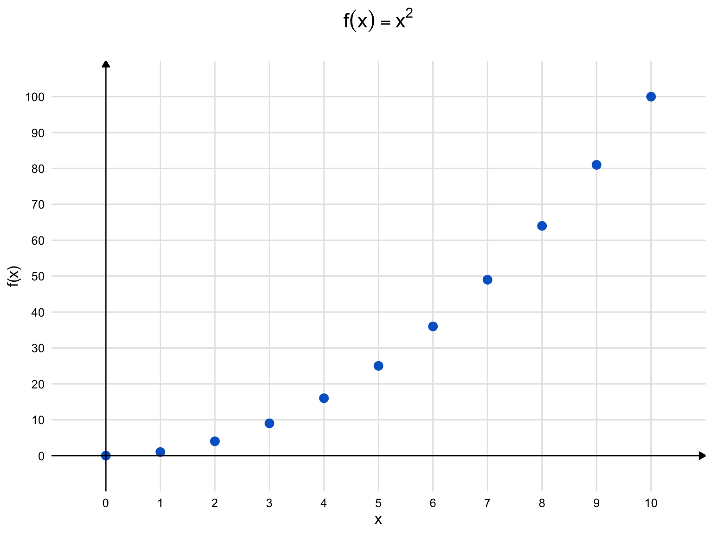

2 Les fonctions puissances
Question 1
Soit \(x,y\in,]0,\infty[\) et soit \(\alpha,\beta\in\mathbb{R}\). Montrez les propriétés ci-dessous en supposant que \(x^{\alpha}\) est défini par \(e^{\alpha\log x}\).
(a)
\[\log x^\alpha = \alpha\log x\]
Solution. \[\begin{align} \log x^\alpha &=\log e^{\alpha\log x} && \text{par définition de $x^{\alpha}$,} \\ &=\alpha\log x && \text{d'après une propriété de la fonction $\log$.} \end{align}\]
(b)
\[(x\cdot y)^\alpha=x^{\alpha}\cdot y^{\alpha}\]
Solution. \[\begin{align} x^{\alpha}\cdot y^{\alpha} &=e^{\alpha\log x}\cdot e^{\alpha\log y} && \text{par définition de $x^{\alpha}$ et $y^{\alpha}$,} \\ &=e^{\alpha\log x+\alpha\log y} && \text{d'après une propriété de la fonction $\exp$,} \\ &=e^{\alpha(\log x+\log y)}, && \\ &=e^{\alpha\log(xy)}, && \text{d'après une propriété de la fonction $\log$,} \\ &=(xy)^{\alpha}, && \text{par définition de $(xy)^{\alpha}$.} \end{align}\]
(c)
\[x^{\alpha+\beta}=x^{\alpha}\cdot x^{\beta}\]
Solution. \[\begin{align} x^{\alpha}\cdot x^{\beta} &=e^{\alpha\log x}\cdot e^{\beta\log x} && \text{par définition de $x^{\alpha}$ et $x^{\beta}$,} \\ &=e^{\alpha\log x+\beta\log x} && \text{d'après une propriété de la fonction $\exp$,} \\ &=e^{(\alpha+\beta)\log x}, && \\ &=x^{\alpha+\beta}, && \text{par définition de $x^{\alpha+\beta}$.} \end{align}\]
(d)
\[\left(\dfrac{x}{y}\right)^{\alpha}=\dfrac{x^{\alpha}}{y^{\alpha}}\]
Solution. \[\begin{align} \left(\dfrac{x}{y}\right)^{\alpha} &=\exp\left(\alpha\log\dfrac{x}{y}\right) && \text{par définition de $\left(\dfrac{x}{y}\right)^{\alpha}$,} \\ &=\exp\left(\alpha(\log x -\log y)\right) && \text{d'après une propriété de la fonction $\log$,} \\ &=\exp\left(\alpha\log x -\alpha\log y\right), && \\ &=\exp(\alpha\log x)\cdot\exp(-\alpha\log y) && \text{d'après une propriété de la fonction $\exp$,} \\ &=\dfrac{x^{\alpha}}{y^{\alpha}} && \text{par définition de $x^{\alpha}$ et $y^{\alpha}$.} \end{align}\]
(e)
\[x^{-\alpha}=\dfrac{1}{x^{\alpha}}\]
Solution. \[\begin{align} x^{-\alpha} &=e^{-\alpha\log x} && \text{par définition de $x^{-\alpha}$,} \\ &=\frac{1}{\exp(\alpha\log x)} && \text{d'après une propriété de la fonction $\exp$,} \\ &=\frac{1}{x^{\alpha}} && \text{d'après la définition de $x^{\alpha}$.} \end{align}\]
Question 2
Donnez une preuve non-constructive qu’un nombre irrationnel élevé à une puissance irrationnelle peut être un nombre rationnel. Suggestion: considérez le nombre \(\sqrt{2}^{\sqrt{2}}\).
Solution. On sait que \(\sqrt{2}\) est irrationnel. Si \(\sqrt{2}^{\sqrt{2}}\) est rationnel, alors nous avons un exemple d’un nombre irrationnel élevé à une puissance irrationnelle qui correspond à un nombre rationnel. Si ce n’est pas le cas, alors \(\sqrt{2}^{\sqrt{2}}\) est un nombre irrationnel. Prenons alors ce dernier nombre et élevons-le à la puissance \(\sqrt{2}\). On obtient alors \(2\), un nombre rationnel. Ainsi, que \(\sqrt{2}^{\sqrt{2}}\) soit rationnel ou non, nous sommes certains de l’existence de nombres rationnels qui s’écrivent comme un nombre irrationnel élevé à une puissance irrationnelle.
On dit qu’il s’agit d’une preuve non constructive, car on ne construit pas explicitement un nombre qui jouit de la propriété mentionnée.
Question 3
Qu’est-ce qui cloche dans ce raisonnement? \[\begin{align} x^2 &= \underbrace{x + x + ... + x}_{x \text{ fois}} \\ \frac{d}{dx}\left(x^2\right) &= \frac{d}{dx}\left(\underbrace{x + x + ... + x}_{x \text{ fois}}\right) \\ 2x &= \underbrace{1 + 1 + ... + 1}_{x \text{ fois}} = x \\ 2 &= 1 \end{align}\]
Solution. L’égalité n’est vraie que pour des valeurs de \(x\) correspondant à des nombres naturels. Voici le graphe de la fonction :
Comme une telle fonction n’est pas continue, elle ne peut pas être dérivable. En effet, pour des valeurs de \(h\) qui ne sont pas des nombres naturels, \(f(x+h)\) n’est pas définie lorsque que \(x\) est un nombre naturel.
Question 4
Calculez la dérivée des fonctions suivantes sur l’intervalle \(]0,+\infty[\).
(a)
\[f(x) = x^{\frac{1}{2}}\]
Solution. \[f'(x) = \frac{1}{2}x^{-\frac{1}{2}}=\frac{1}{2\sqrt{x}}\]
(b)
\[h(x) = x^{\pi}\]
Solution. \[h'(x) = \pi x^{\pi-1}\]
Question 5
Étudier la fonction \(f(x) = x^{\frac{1}{3}}\) sur \(\mathbb{R}\). Vous devrez entre autre déterminer son domaine de définition, calculer les dérivées première et seconde puis étudier leur signe à différents endroits. Finalement, vous devrez tracer la courbe représentative de la fonction \(f\).
Solution. Le domaine de définition est \(\mathbb{R}\) car la fonction \(x^3\) prend toutes les valeurs de \(\mathbb{R}\) et elle bijective.
\[f'(x) = \frac{1}{3}x^{-\frac{2}{3}}=\frac{1}{3\sqrt[3]{x^2}}\qquad(x\neq 0).\] De même, \[f''(x) = -\frac{2}{9\sqrt[3]{x^5}}\qquad(x\neq 0).\]
Pour \(x \neq 0\), \(f'(x) > 0\). Pour \(x<0, f''(x)>0\) alors que \(f''(x)<0\) pour \(x>0\). Les dérivées d’ordre 1 et 2 ne sont pas définies en \(x=0\).
La fonction \(f\) est croissante et concave vers le haut sur \(]-\infty,0[\) alors qu’elle est croissante et concave vers le bas sur \(]0,+\infty[\).
La courbe admet une tangente verticale en 0.
Question 6
Calculer la dérivée des fonctions suivantes :
(a)
\[f(x) = (x^2+1)^{\frac{1}{2}}\]
Solution. \[f'(x) = \frac{1}{2}(x^2+1)^{-\frac{1}{2}} \cdot 2x = \frac{x}{\sqrt{x^2+1}}\]
(b)
\[g(x) = (2x+3)^{\frac{3}{2}}\]
Solution. \[g'(x) = \frac{3}{2}(2x+3)^{\frac{1}{2}} \cdot 2 = 3(2x+3)^{\frac{1}{2}}=3\sqrt{2x+3}\]
(c)
\[h(x) = \sqrt[3]{x^2-4}\]
Solution. \[h'(x) = \frac{1}{3}(x^2-4)^{-\frac{2}{3}} \cdot 2x = \frac{2x}{3(x^2-4)^{\frac{2}{3}}}=\frac{2x}{3\sqrt[3]{(x^2-4)^2}}\]
Question 7
Calculer les limites suivantes :
(a)
\[\lim_{x \to +\infty} \frac{x^{\frac{5}{2}}}{x^2+1}\]
Solution. \[\lim_{x \to +\infty} \frac{x^{\frac{5}{2}}}{x^2+1} = \lim_{x \to +\infty} \frac{\sqrt{x}}{1+\frac{1}{x^2}} = +\infty\]
(b)
\[\lim_{x \to +\infty} \frac{x^{\pi}}{x^3}\]
Solution. \[\lim_{x \to +\infty} \frac{x^{\pi}}{x^3} = \lim_{x \to +\infty} x^{\pi-3} = +\infty \qquad(\text{car }\pi - 3>0)\]
Question 8
Résoudre dans \(]0,+\infty[\) :
(a)
\[x^{\frac{1}{2}} = 2\]
Solution. \[x^{\frac{1}{2}} = 2 \iff x = 4\]
(b)
\[x^{-\frac{1}{3}} \leq 1\]
Solution. \[x^{-\frac{1}{3}} \leq 1 \iff x \geq 1\] car la fonction \(x \mapsto x^{-\frac{1}{3}}\) est décroissante sur \(]0,+\infty[\) et elle prend la valeur \(1\) lorsque \(x=1\).
(c)
\[x^{\frac{3}{2}} = x^{\frac{1}{2}}\]
Solution. \[x^{\frac{3}{2}} = x^{\frac{1}{2}} \iff x^{\frac{1}{2}}(x-1) = 0 \iff x = 0\] ou \(x = 1\). Dans \(]0,+\infty[\), la seule solution est \(x = 1\).
Question 9
On considère la fonction \(f(x) = x^{\alpha} - x^{\beta}\) sur \(]0,+\infty[\) avec \(\alpha > \beta > 0\).
(a)
Trouvez les \(x\in]0,+\infty[\) pour lesquels la dérivée de \(f\) s’annule.
Solution. \(f'(x) = \alpha x^{\alpha-1} - \beta x^{\beta-1}\)
\(f'(x) = 0 \iff x^{\alpha-1}(\alpha - \beta x^{\beta-\alpha}) = 0\)
\(\iff x = (\frac{\alpha}{\beta})^{\frac{1}{\alpha-\beta}}\) car \(x>0\).
(b)
Déterminer l’allure du graphe en utilisant le travail fait en (a).
Solution. La valeur de \(x\) trouvée est \(x_0 = (\frac{\alpha}{\beta})^{\frac{1}{\alpha-\beta}}\). On peut calculer la dérivée seconde et montrer qu’elle est positive à cet endroit. On peut aussi remarquer que la fonction s’annule seulement en \(x=0\) et en \(x=1\) alors qu’elle tend vers l’infini lorsque \(x\) devient très grand. Cela oblige \(f\) à posséder un minimum lorsque sa dérivée s’annule entre 0 et 1, sans quoi il y aurait forcément d’autres zéros de la dérivée première.
Question 10
Calculer les intégrales suivantes :
(a)
\[\int_0^1 x^{\frac{1}{2}}dx\]
Solution. \[\int_0^1 x^{\frac{1}{2}}dx = \left[\frac{2}{3}x^{\frac{3}{2}}\right]_{x=0}^1 = \frac{2}{3}\]
(b)
\[\int_1^2 x^{-\frac{1}{2}}dx\]
Solution. \[\int_1^2 x^{-\frac{1}{2}}dx = \left[2x^{\frac{1}{2}}\right]_1^2 = 2\left(\sqrt{2}-1\right)\]
(c)
\[\int_0^4 (x^{\frac{1}{3}} + x^{\frac{2}{3}})dx\]
Solution. \[\int_0^4 \left(x^{\frac{1}{3}} + x^{\frac{2}{3}}\right)dx = \left[\frac{3}{4}x^{\frac{4}{3}} + \frac{3}{5}x^{\frac{5}{3}}\right]_{x=0}^4 = \frac{3}{4}4^{\frac{4}{3}} + \frac{3}{5}4^{\frac{5}{3}}=3\sqrt[3]{4}+\frac{3\sqrt[3]{4^5}}{5}\]
Question 11
Montrez que pour tout \(x > 0\) et pour tout \(\alpha,\beta \in \mathbb{R}\), on a : \[\frac{d}{dx}(x^{\alpha}x^{\beta}) = (\alpha+\beta)x^{\alpha+\beta-1}\]
Solution. On utilise la règle du produit :
\(\frac{d}{dx}(x^{\alpha}x^{\beta}) = x^{\alpha} \cdot \frac{d}{dx}(x^{\beta}) + x^{\beta} \cdot \frac{d}{dx}(x^{\alpha})\)
\(= x^{\alpha} \cdot \beta x^{\beta-1} + x^{\beta} \cdot \alpha x^{\alpha-1}\)
\(= (\alpha+\beta)x^{\alpha+\beta-1}\)